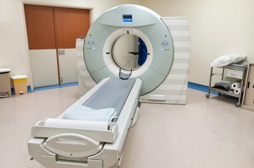

Le service de radiologie de notre clinique est à la pointe de la technologie, utilisant les équipements les plus avancés pour assurer des
diagnostics d'une précision exceptionnelle. Grâce à ces innovations, nous sommes en mesure de détecter et d'analyser les affections avec
une rapidité et une exactitude remarquables, facilitant ainsi une prise en charge médicale rapide et adaptée à chaque patient.
Notre équipe de radiologues, composée de professionnels hautement qualifiés et expérimentés, est dédiée à fournir des soins personnalisés
de qualité. Chaque examen radiologique est réalisé avec une attention particulière à votre bien-être et à votre confort. Nos radiologues
travaillent en étroite collaboration avec les autres spécialistes de la clinique pour garantir que chaque image est interprétée avec précision,
ce qui permet de poser des diagnostics rapides et fiables.
Que ce soit pour un examen de routine, tel qu'une radiographie pour une évaluation générale, ou pour des examens plus complexes, comme un scanner
ou une IRM, notre service de radiologie est équipé pour répondre à vos besoins. Nous sommes également conscients que certains examens peuvent
générer de l'anxiété, c'est pourquoi nous nous engageons à vous accompagner avec empathie tout au long de votre parcours.
En choisissant notre service de radiologie, vous optez pour une prise en charge globale, où la précision des diagnostics se conjugue avec un
véritable souci de votre confort et de votre bien-être. Notre priorité est de vous offrir un service à la fois efficace et humain, en mettant
à votre disposition toute notre expertise pour vous assurer des soins de qualité optimale.
Nos prestations incluent
Radiologie Standard
Pour l'évaluation des os, des poumons et d'autres organes.
Échographie
Utilisée pour visualiser les organes internes et surveiller le développement prénatal.

Scanner (CT)
Pour une analyse détaillée des structures internes du corps, utile pour détecter les anomalies subtiles.
IRM
Examen non invasif qui fournit des images en haute résolution des tissus mous et des organes.
La radiologie est une branche de la médecine qui utilise des technologies d'imagerie pour diagnostiquer et traiter les maladies. Grâce à divers procédés d'imagerie, tels que les rayons X, les ultrasons, la tomodensitométrie (CT), et l'imagerie par résonance magnétique (IRM), les radiologues sont en mesure de voir l'intérieur du corps sans avoir besoin d'une intervention chirurgicale.
Le service de radiologie joue un rôle crucial dans le diagnostic et le suivi des maladies. Il aide les médecins à détecter des conditions telles que les fractures, les tumeurs, les infections, et bien d'autres, permettant ainsi un traitement rapide et approprié.